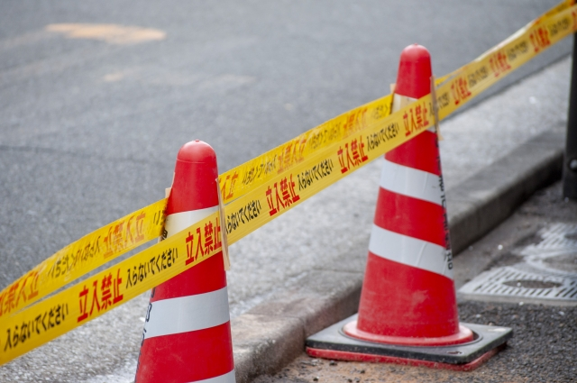

ひかりの丘牧場 ＼本日のやぎニュース🐐☀️／ 屋根の上でお昼寝前のパトロール中？高いところが大好きな2頭、今日も元気いっぱいです！🌿 青空に映えるこの姿、見てるだけで癒されますね。 ご来場の際は、ぜひ上も見上げてみてください👀✨ #牧場の暮らし #やぎのいる生活 #空とやぎ 4810 2521 7
東日本ニュース365 今朝、JR飯田橋駅付近の丁字路で、自転車と歩行者の接触事故が発生しました。警視庁によると、加害者は近くの大学に通う女子大学生で、脇道から飛び出した50代会社員に衝突。被害者は頭部を強く打ち、救急搬送のうえ数日間の入院が必要とのことです。 現場は見通しが悪く、加害者は「急いでいた」と説明。警察が事故原因と過失の程度を調査中です。  3002 1674 28
yuko@グルメ 代々木公園近くにオープンした「Butter&Whimsy」では、1日限定50個の“焦がしバター塩あんぱん”が大人気！外はパリッ、中はとろ〜り。上品な塩気があんこの甘さを引き立てて、リピ確定の逸品でした！ 開店30分で売り切れることもあるので、早めの訪問がおすすめです✨ 5000 120 14